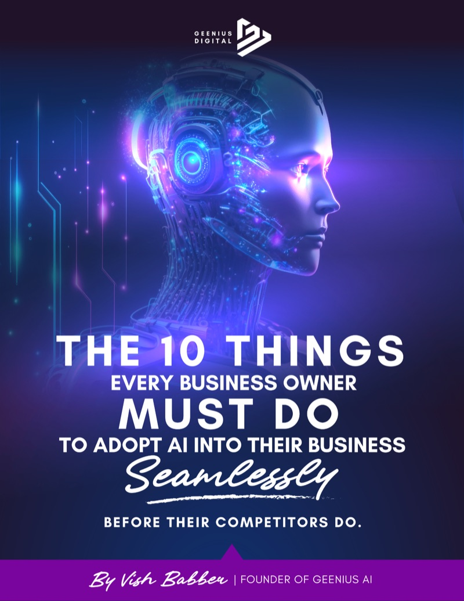

Stop Letting Slow Response & Missed Opportunities Cost You Thousands Every Month — Before Your Competitors Beat You to It
You're not losing because your marketing is bad. You're losing because your business can't keep up with the demand you're already generating.
Inside this guide, you'll discover exactly how to fix that — fast.
Free. Instant access. No spam.

The REAL Problem: Let's be honest for a second…
The issues most businesses face right now are:
Leads are coming in… but not being followed up fast enough
Calls are being missed… and never called back
Enquiries are sitting there… while competitors reply instantly
Staff are stretched… inconsistent… or too expensive to scale
It's not just inefficiency — it's revenue leakage.
Every missed call
Every delayed reply
Every enquiry that goes cold
That's a customer choosing someone else.
You're already paying for traffic, but your operations are quietly killing your ROI.
You just keep going round in a vicious circle, where your output keeps chasing input. And in the end, the only thing that happens is that you margins get squeezed.
If You Are Not Ready For A.I, It's Already Too Late.
AI isn't coming. It's already here.
Most Businesses
- Confused where to start
- Burned by overhyped AI tools
- Think it's complicated or technical
Your Competitors
- Respond instantly, 24/7
- Capture and qualify every lead
- Book appointments automatically
- Scale without hiring more staff
That's exactly why this guide exists. To help you navigate with clarity on how you can implement AI into your business.
No commitment • Instant access
Who This Guide Is For
This guide is for you if:
- You're generating leads but not converting enough
- You know speed to response matters but can't maintain it
- Your team can't keep up with demand
- You want to scale without hiring more staff
- You've heard about AI but don't know how to apply it
If that sounds like you…
👉 This guide will give you clarity, direction, and a real plan.
What's Inside The Guide
This isn't theory. This is the real-world playbook for implementing AI into your business — without breaking your operations or confusing your team.
Why Most Businesses Overcomplicate AI (And How To Make It Feel Invisible)
If customers have to "figure it out"… you've already lost.
The Fastest Way To Kill Customer Trust With AI (And What To Do Instead)
Transparency doesn't reduce conversions — it increases them.
Why AI Fails Without Integration (And How To Fix Your Workflow Properly)
If it doesn't connect to your CRM, calendar, and pipeline… it creates more work, not less.
The #1 Reason Your AI Sounds Weak, Vague, Or Useless
Most AI isn't bad — it's just undertrained.
Why Your Team Will Resist AI (Unless You Do This One Thing First)
AI doesn't fail because of tech — it fails because of people.
The Hidden Data Most Businesses Ignore (That's Killing Their Conversions)
Every missed question and drop-off is telling you exactly what to fix.
How To Use AI Without Losing The Human Touch (This Is Where Most Get It Wrong)
AI handles volume. Humans handle value. The winners use both.
Why Rolling Out AI Too Fast Breaks Everything (And The Smarter Way To Start)
Start with one bottleneck. Fix it. Then scale.
What Your Customers Need To Hear About AI (Or They Won't Trust It)
People don't hate AI — they hate being ignored.
The Real Competitive Advantage Nobody Talks About — Speed
If you're not responding within minutes… you're losing customers.
AND MOST IMPORTANTLY:
- Where you're currently losing revenue (without realising it)
- How to respond faster than your competitors — automatically
- How to turn AI into a 24/7 revenue engine — not just another tool
Why I Created This Guide
Hey, it's Vish. I didn't get into AI because it was trendy. I got into it because I kept seeing the same frustrating pattern over and over again. Good businesses losing customers they had already worked hard to attract. Not because their product was bad or their marketing didn't work, but because they simply couldn't keep up.
Missed calls, late replies, enquiries sitting there with no follow-up. And every time that happened, the customer didn't wait. They just went somewhere else.
At first, I thought this was a people problem. Then I realised it was a systems problem. Humans can't respond instantly, 24/7, handle everything at once, and they shouldn't have to.
That's what led me deeper into AI, not from a hype perspective, but from a practical one. How do you use it in a way that actually supports a business instead of complicating it?
What I found is that most businesses don't struggle with AI because it's too advanced. They struggle because it's been explained badly, implemented badly, and overcomplicated. So instead of helping, it just creates more confusion.
That's why I put this guide together. Not to overwhelm you or sell you anything, but to give you a clear and practical way to start thinking about AI properly, in a way that actually fits into your business, your team, and how you operate day to day.
If you take one thing from this, it's this: you don't need more tools and you don't need more complexity, you just need better systems.
Right now, there are only two types of businesses:
Those who are starting to adopt AI and pulling ahead — and those who are waiting… and slowly falling behind.
Delayers
- Waiting
- Overthinking
- Falling behind
Adopters
- Taking action
- Implementing AI
- Pulling ahead
There isn't a middle ground anymore. The gap is getting bigger every month.
- Where you're losing opportunities right now
- What to fix first
- How to implement AI without overcomplicating it
Which One Are You?
Are you adopting or getting ready to adopt AI into your business? Or are you paralysed by the overwhelm that is being created by not knowing where to start?
If You Want To Stop Losing Leads, Increase Conversions, And Scale Without Hiring — Start Here
Download your free guide now and see exactly how to implement AI into your business the right way.
Download instantly. Start implementing today.
No fluff. No theory. No technical overwhelm. Just a clear, practical roadmap you can actually use.